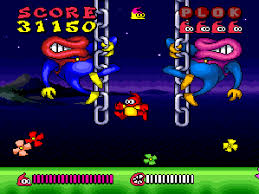
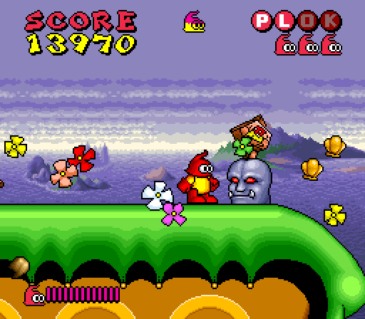
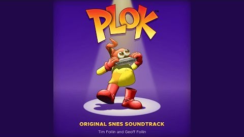

Plok!
-
Published by: Tradewest, Inc. & Activision Japan Co., Ltd.
-
Developed by: Software Creations Ltd.
-
Released: Sept, 1993 (SNES)
One day, Plok awakes to find out that his flag has been stolen. He spots it on a neighboring island and travels there to get it back. However, as he returns to his home, he realizes that all flags on his island have been replaced with flea-flags. This is only the beginning of his problems though, and he has to face many more challenges before the end of the game. Plok has to jump and fight his way through numerous levels, trying to find the exit or fulfilling certain missions such as killing a set number of fleas. Plok can perform two different jumps, a normal jump and a higher spinning jump. He can attack his enemies by throwing his limbs at them. Collecting presents will temporarily equip him with different weapons, or transform him into all sorts of vehicles such as a helicopter or a U.F.O.
 Genre: Action Platformer
Perspective: Side view
Visual: 2D Scrolling
Gameplay: Arcade, Platform
It's disappointing that Plok didn't sell well, because it was, and still is, one of the best platformers without a well-known character out there. Even Shigeru Miyamoto supposedly loves the game. Its only real disappointing aspect is the lack of a save feature or password system, requiring you to beat it in one sitting, but thankfully it's only about two hours long at most.-8/10
-Marcel Van Duyn (Nintendo Life)

Listen to some of the best songs from Plok's soundtrack here! Music composed by Tim and Geoff Follin.